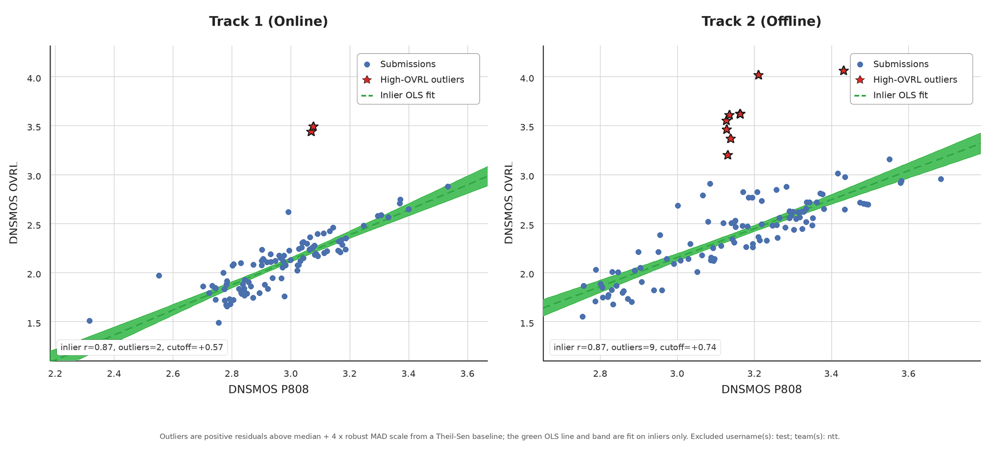

REAL-TSE Challenge
Real-world Target Speaker Extraction Challenge
Moving target speaker extraction research from simulated benchmarks toward real-world conversational applications
A satellite challenge of IEEE SLT 2026

Moving target speaker extraction research from simulated benchmarks toward real-world conversational applications
A satellite challenge of IEEE SLT 2026
Evaluation output submission deadline has passed. The deadline for both official tracks was June 25, 2026 (AoE); audio submissions are now closed.
We are now awaiting participants’ system description reports (deadline: July 1, 2026 (AoE)). Results currently shown on the leaderboard are under review by the organizers and are not yet final.
Evaluation output submission deadline extended: The deadline for both official tracks has been extended from June 20, 2026 (AoE) to June 25, 2026 (AoE).
The system description paper deadline remains unchanged: July 1, 2026 (AoE). The SLT 2026 Challenge Track paper deadline also remains unchanged: July 8, 2026.
The REAL-TSE Challenge, organized as a satellite challenge of IEEE SLT 2026, focuses on Target Speaker Extraction (TSE) in real conversational environments. Given a multi-speaker mixture recorded in real-life settings such as meetings and dinner-party interactions, together with enrollment utterance(s) from a target speaker, the task is to recover the target speaker’s speech from the mixture. In contrast to conventional benchmarks built on simulated or read-speech data, REAL-TSE emphasizes naturally occurring overlap, authentic reverberation, ambient noise, and conversational dynamics in Mandarin and English, providing a more practical testbed for real-world TSE research.
The REAL-TSE Challenge provides an official development set and evaluation set, while model training is restricted to eligible external open-source data under the rules summarized below.
The challenge does not define an official training set. Participants may use any open-source datasets for training, and pre-trained models are allowed, provided that all data sources and checkpoints are clearly documented.
Usage: Every dataset and pre-trained model must be reported in the system description with citations or links. The development and test sets of AliMeeting, AISHELL-4, AMI, DipCo, and CHiME6 must not be used at any stage, including pre-training, training, or data augmentation. However, the official training splits of these corpora are permitted. Note that some corpora (e.g., AMI) have multiple partition schemes — please refer to the FAQ: What data can I use for training? for details on which sessions are excluded.
The development set is derived from REAL-T, a real-world conversational dataset for target speaker extraction (to be released soon). The data originates from five speaker diarization corpora—AISHELL-4, AliMeeting, AMI, DipCo, and CHiME6—covering Mandarin and English in scenarios such as meetings and dinner parties. Each sample includes a multi-speaker mixture, enrollment utterance(s) for the target speaker, and the clean target reference.
The data is constructed through an automated pipeline that extracts naturally overlapping segments as mixtures and selects non-overlapping speech segments of at least 5 seconds as enrollment utterances. Unlike synthetic mixtures, it captures realistic overlap patterns, reverberation, ambient noise, and conversational turn-taking. The development set is intended for validation, model comparison, and hyper-parameter tuning only, and must not be used for training or fine-tuning.
Usage: The development set may be used for hyper-parameter selection, model comparison, and validation, but must not be used for model training or fine-tuning.
The evaluation set has been released and consists of two subsets that together assess both in-domain robustness and real-world generalization, with a total of 5,000 mix-enroll pairs:
Derived from the same open-source corpora as the development set, sharing similar acoustic conditions and conversation styles. There is no overlap between EVAL-1 and the development set. EVAL-1 measures system performance under familiar, in-domain settings.
Newly collected real-world conversational recordings specifically captured for the REAL-TSE Challenge. EVAL-2 covers diverse acoustic scenarios — including meeting rooms, cafés, home environments, and in-vehicle conversations — recorded under a variety of conditions such as near-field microphones, far-field microphones, and mobile devices. EVAL-2 provides a comprehensive assessment of model generalization to previously unseen acoustic environments and interaction patterns.
Usage: The evaluation set must not be used for training, fine-tuning, hyper-parameter tuning, or any form of model optimization. It is reserved exclusively for final evaluation.

Scenario: Target speaker extraction in latency-sensitive applications such as assistive hearing, real-time communication, and interactive voice systems, where the system must produce temporally responsive outputs under overlapping speech and background noise, enabling continuous and natural listening.
Task: Evaluate target speaker extraction under strict end-to-end latency constraints. Effective latency is measured via the temporal response of outputs to localized input perturbations. Models must ensure input changes are reflected within a bounded delay (≤ 100 ms), balancing extraction quality and responsiveness.

Scenario: Target speaker extraction in offline scenarios such as speech transcription, meeting analysis, and audio post-processing, where the full utterance is available prior to inference.
Task: Evaluate target speaker extraction with full-utterance access and unconstrained inference. Systems may exploit global temporal dependencies and full-context modeling to maximize separation quality. This track targets the upper performance bounds of TSE systems, focusing on speech quality, interference suppression, and robustness without latency constraints.
We provide four pretrained baseline models, all based on the BSRNN architecture [1] and trained on the Libri2Mix-100 dataset [2]. These models differ in the type of speaker representation and whether low-latency constraints are considered.
Two models use speaker embeddings extracted from a pretrained ECAPA-TDNN model as speaker conditioning [3][4]. The other two adopt a combination of TF-Map and contextual embeddings [5]. For each type of speaker representation, both an offline and an online (low-latency) variant are provided. All models are trained on 16 kHz audio for 150 epochs with an exponential decay learning rate schedule from 0.001 to 2.5e-5.
Provided Checkpoints
ECAPA-TDNN speaker embeddings as conditioning.
spk_emb_100 — Offlinespk_emb_causal_100 — OnlineTF-Map and contextual embeddings as multi-level speaker representation.
tfmap_context_100 — Offlinetfmap_context_causal_100 — OnlineThe baseline systems can be run using wesep-real-tse, and have been integrated into the REAL-TSE Challenge repo for automated inference and evaluation.
[1] Y. Luo and J. Yu, “Music source separation with band-split RNN,” IEEE/ACM Transactions on Audio, Speech, and Language Processing, vol. 31, pp. 1893–1901, 2023.
[2] J. Cosentino, M. Pariente, S. Cornell, A. Deleforge, and E. Vincent, “LibriMix: An open-source dataset for generalizable speech separation,” 2020.
[3] B. Desplanques, J. Thienpondt, and K. Demuynck, “ECAPA-TDNN: Emphasized Channel Attention, Propagation and Aggregation in TDNN Based Speaker Verification,” in Proc. Interspeech 2020, pp. 3830–3834.
[4] H. Wang, C. Liang, S. Wang, Z. Chen, B. Zhang, X. Xiang, Y. Deng, and Y. Qian, “WeSpeaker: A research and production oriented speaker embedding learning toolkit,” in ICASSP 2023.
[5] K. Zhang, J. Li, S. Wang, Y. Wei, Y. Wang, Y. Wang, and H. Li, “Multi-level speaker representation for target speaker extraction,” in ICASSP 2025.
The four metrics described below are computed by the official evaluation pipeline. For each metric, valid submissions are ranked independently using dense ranking, and the final challenge ranking is determined by averaging the dense rankings across the four metrics.
Each team may submit up to three submissions per track. Each team may submit up to one submission per track per day, but on the final deadline day (Jun 20, 2026 Jun 25, 2026, AoE), this quota increases to three submissions per track. Only the best-performing submission from each team appears on the final leaderboard and is considered for the official ranking. Detailed formulations for each sub-metric will be specified in the challenge description paper and released with the official scoring toolkit.
Word Error Rate (WER) measures how accurately the extracted speech can be transcribed. A lower WER indicates better intelligibility.
Official ASR backbones: Zipformer-EN / Zipformer-ZH, chosen for stable transcription with reduced hallucinations.
Cosine similarity between speaker embeddings of the extracted and reference speech. Higher similarity indicates better speaker fidelity.
Neural Mean Opinion Score estimator (DNSMOS) evaluating the overall perceptual quality of the extracted speech.
Measures accuracy of extracting speech only from target-speaker active regions via temporal precision, recall, and their harmonic mean F1.
All audio signals are normalized using a unified scaling procedure before this metric is computed.
After reviewing the submitted results, we observed that a number of teams had severely overfit to the DNSMOS OVRL metric. As shown in the figure below, while most teams' DNSMOS OVRL and DNSMOS P808 scores are strongly correlated, a small number of teams obtain OVRL scores far above their P808 scores — in these cases OVRL no longer reliably reflects the true MOS quality of the audio.

Per-team DNSMOS OVRL vs. DNSMOS P808. Most teams lie along the diagonal (strong agreement); a few outliers show OVRL ≫ P808, indicating OVRL inflation that diverges from perceptual quality.
To verify this, we sampled audio from several top-ranked teams and conducted subjective MOS listening tests, then compared the results against the existing DNSMOS metrics. The agreement between human MOS and each metric — measured by Linear Correlation Coefficient (LCC) and Spearman’s Rank Correlation Coefficient (SRCC) — is summarized below (higher = better agreement with human perception):
| Scope | n | DNSMOS-OVRL | DNSMOS-P808 | DNSMOS-PRO | |||
|---|---|---|---|---|---|---|---|
| LCC | SRCC | LCC | SRCC | LCC | SRCC | ||
| Track 1 | 500 | +0.003 | +0.040 | +0.453 | +0.380 | +0.156 | +0.115 |
| Track 2 | 600 | +0.182 | +0.186 | +0.466 | +0.463 | +0.229 | +0.234 |
| Overall | 1100 | +0.165 | +0.186 | +0.489 | +0.460 | +0.233 | +0.230 |
Correlation between human MOS and each DNSMOS metric. DNSMOS-P808, which achieves the highest agreement with human perception, is highlighted.
Key dates for the REAL-TSE Challenge at IEEE SLT 2026. All times follow the official challenge announcement unless stated otherwise.
7 April 2026 (AoE)
Team registration for the challenge opens.
10 April 2026 (AoE)
The development dataset and baseline systems are released. Dataset access is restricted to registered teams only; download links and passwords have been sent to registered teams, and will continue to be sent to newly registered teams (within 24 hours of registration).
31 May 2026 (AoE)
The evaluation set has been released to registered teams via email, comprising EVAL-1 (Seen, 2,000 pairs) and EVAL-2 (Unseen, 3,000 pairs) — 5,000 mix-enroll pairs in total. Team registration is now closed.
5 June 2026 (AoE)
The public leaderboard is open for participating teams to monitor and compare submissions. Track links, team approval details, and submission instructions have been sent to all participating teams via email.
20 June 2026 25 June 2026 (AoE)
The leaderboard is frozen and evaluation output submissions close.
1 July 2026 (AoE)
Deadline for submitting the official system description paper. This deadline remains unchanged.
8 July 2026 (AoE)
Deadline for submitting challenge-related papers to the SLT Challenge Paper Track. Please follow the official SLT 2026 authors' instructions.
1 September 2026 (AoE, tentative)
Acceptance decisions for papers submitted to the SLT Challenge Paper Track are announced.
Please register via this form. We will send you a successful registration email within three days after your registration. If you have not received it, please contact us.
Team registration is now closed (as of May 31, 2026, AoE). No further teams can register for the REAL-TSE Challenge.
Leaderboard account registration is open for participating teams. Please create and activate an account on the leaderboard website, complete your profile if prompted, open the corresponding track page, and click Participate to submit your team application.
Final verified Phase-1 rankings (official evaluation) for both tracks. As previously stated, submissions that do not meet the challenge requirements, or that do not include a system description, are removed from the final official rankings. This page shows the final valid rankings for all compliant systems after that reordering. The original ranking list can be found in the official leaderboard. The four reported metrics are TER (lower is better), F1, SIM, and DNSMOS-P808 (higher is better). Numbers in parentheses show each team’s dense rank on that metric within the track. Score is the average of the four metric dense ranks (lower is better). Only teams that submitted a system report are listed; BSRNN entries are the official baselines provided by the organizers (no system report). Click Report to open a team’s system description.
| # | Team | TER ↓ | F1 ↑ | SIM ↑ | DNSMOS-P808 ↑ | Score ↓ | Report |
|---|---|---|---|---|---|---|---|
| 🥇 1 | CARTSE | 0.699 (1) | 0.848 (5) | 0.504 (3) | 3.069 (4) | 3.25 | Report |
| 🥈 2 | DeepSound | 0.713 (2) | 0.849 (4) | 0.524 (2) | 2.965 (8) | 4.00 | Report |
| 🥉 3 | SonicAGI | 0.719 (3) | 0.847 (6) | 0.480 (6) | 3.111 (3) | 4.50 | Report |
| 🥉 3 | WasedaM | 0.719 (3) | 0.855 (2) | 0.446 (11) | 3.169 (2) | 4.50 | Report |
| 4 | smellycat | 0.740 (5) | 0.856 (1) | 0.473 (7) | 3.023 (6) | 4.75 | Report |
| 5 | WHU_IASP | 0.750 (6) | 0.852 (3) | 0.442 (12) | 3.175 (1) | 5.50 | Report |
| 6 | insta360 | 0.725 (4) | 0.840 (8) | 0.482 (5) | 2.994 (7) | 6.00 | Report |
| 7 | ChuEst | 0.756 (8) | 0.837 (9) | 0.535 (1) | 2.947 (9) | 6.75 | Report |
| 8 | AIVOX | 0.751 (7) | 0.847 (6) | 0.493 (4) | 2.841 (12) | 7.25 | Report |
| 9 | SHNU-TSE | 0.797 (10) | 0.842 (7) | 0.462 (9) | 3.037 (5) | 7.75 | Report |
| 10 | WAKA | 0.779 (9) | 0.840 (8) | 0.463 (8) | 2.931 (10) | 8.75 | — |
| 11 | BSRNN_TFMAP_CAUSAL Baseline | 0.805 (11) | 0.836 (10) | 0.456 (10) | 2.785 (13) | 11.00 | — |
| 12 | Team-Fly | 0.807 (12) | 0.834 (11) | 0.438 (13) | 2.857 (11) | 11.75 | Report |
| 13 | BSRNN_EMB_CAUSAL Baseline | 0.809 (13) | 0.821 (12) | 0.422 (14) | 2.738 (14) | 13.25 | — |
| # | Team | TER ↓ | F1 ↑ | SIM ↑ | DNSMOS-P808 ↑ | Score ↓ | Report |
|---|---|---|---|---|---|---|---|
| 🥇 1 | MERL | 0.613 (1) | 0.861 (2) | 0.538 (3) | 3.371 (2) | 2.00 | Report |
| 🥈 2 | YiJiaHe | 0.639 (2) | 0.871 (1) | 0.565 (1) | 3.128 (9) | 3.25 | Report |
| 🥉 3 | CARTSE | 0.651 (3) | 0.857 (4) | 0.544 (2) | 3.138 (8) | 4.25 | Report |
| 4 | WasedaM | 0.675 (5) | 0.858 (3) | 0.480 (6) | 3.232 (6) | 5.00 | Report |
| 5 | SonicAGI | 0.680 (6) | 0.851 (6) | 0.471 (7) | 3.258 (5) | 6.00 | Report |
| 6 | WAKA | 0.670 (4) | 0.847 (8) | 0.471 (7) | 3.150 (7) | 6.50 | Report |
| 6 | SHNU-TSE | 0.731 (9) | 0.840 (9) | 0.507 (5) | 3.362 (3) | 6.50 | Report |
| 7 | ChuEst | 0.710 (7) | 0.831 (11) | 0.532 (4) | 3.064 (10) | 8.00 | Report |
| 8 | pyannoteAI | 0.728 (8) | 0.855 (5) | 0.464 (9) | 2.904 (12) | 8.50 | Report |
| 9 | AGH-JHU | 0.743 (10) | 0.837 (10) | 0.434 (11) | 3.335 (4) | 8.75 | Report |
| 10 | WHU_IASP | 0.757 (11) | 0.850 (7) | 0.465 (8) | 2.961 (11) | 9.25 | Report |
| 11 | CUDA_OUT_OF_MEMORY | 0.827 (12) | 0.819 (13) | 0.364 (13) | 3.435 (1) | 9.75 | Report |
| 12 | BSRNN_EMB Baseline | 0.829 (13) | 0.829 (12) | 0.417 (12) | 2.875 (13) | 12.50 | — |
| 12 | BSRNN_TFMAP Baseline | 0.838 (14) | 0.829 (12) | 0.443 (10) | 2.756 (14) | 12.50 | — |
See the live, continuously updated results on the public REAL-TSE leaderboard.
Participants may submit results for one or both tracks of the Challenge.
Key Requirements
Latency
The offset introduced by the whole processing chain including STFT, iSTFT, overlap-add, additional lookahead frames, etc., compared to just passing the signal through without modification. This does not include buffering latency.
The latency introduced by block-wise processing, often referred to as hop-size, frame-shift, or temporal stride.
Algorithmic and buffering latency definitions and examples above follow the ICASSP 2023 Deep Noise Suppression Challenge (Microsoft Research).
Key Requirements
Detailed data usage constraints—including allowed training sources, prohibited corpora, and the usage scope of the development and evaluation sets—are specified in the Data section above. All participants must comply with those requirements.
We recommend using the public leaderboard for official submissions. Track pages are available for Track 1: Online Target Speaker Extraction and Track 2: Offline Target Speaker Extraction.
.zip package
containing outputs for both EVAL-1 and EVAL-2. EVAL-1-only or
EVAL-2-only submissions are not accepted.Alternative submission
If you encounter technical issues with leaderboard registration, team approval, upload format, or evaluation status, please contact realtse.challenge@gmail.com. As a fallback, the organizers can accept a Google Drive link to your submission package for manual evaluation, but manual results may be delayed by 1-2 days.
The organizers reserve the right to further clarify, update, or refine the evaluation protocol if necessary.
Teams may use only openly available (open-source) datasets for model training. The official training splits of AliMeeting, AISHELL-4, AMI, DipCo, and CHiME6 are permitted, but their development and test sets must not be used at any stage, including pre-training, training, or data augmentation. Pre-trained models are allowed but must be clearly documented.
Note on AMI corpus splits: The AMI corpus has multiple partition schemes (see AMI dataset page). We follow the Full-corpus-ASR partition of meetings. Under this partition, the following sessions are considered development or test data and must not be used:
.zip package containing both EVAL-1 and
EVAL-2 outputs. Please select EVAL1+EVAL2 on the submission page and follow the Zip
structure instructions shown there.
Nanjing University
Chinese University of Hong Kong, Shenzhen
Nanjing University
Northwestern Polytechnical University
Nanjing University
NTT, Inc.
Northwestern Polytechnical University
Brno University of Technology
Shanghai Jiao Tong University
Northwestern Polytechnical University
Chinese University of Hong Kong, Shenzhen
Chinese University of Hong Kong, Shenzhen
For any questions or inquiries, please feel free to reach out to us at:
realtse.challenge@gmail.com